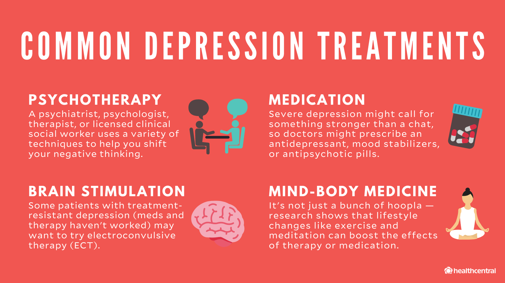

Treatment options for depression can vary depending on the severity of the condition and individual needs. It's essential to consult a mental health professional to determine the most appropriate treatment plan. Here are some detailed treatment options for people with depression, along with some resources for further information and support:
Psychotherapy (Talk Therapy):
Psychotherapy, often referred to as talk therapy, is a crucial part of treating depression. It involves conversations with a trained therapist to explore and address the root causes of depression. Several forms of psychotherapy have been effective:
- Cognitive-Behavioral Therapy (CBT): CBT helps individuals identify and modify negative thought patterns and behaviors contributing to depression. It equips individuals with practical tools to manage their condition effectively.
- Interpersonal Therapy (IPT): IPT concentrates on improving interpersonal relationships and communication skills. It helps individuals identify and resolve issues that may be contributing to their depression, such as conflicts or life transitions.
- Psychodynamic Therapy: This approach explores unconscious thoughts and emotions contributing to depression. By gaining insight into these underlying factors, individuals can work toward healing and self-awareness.
Depression Resources
- National Suicide Prevention Lifeline: If you or someone you know is in crisis, call this toll-free lifeline available 24/7 at 1-800-273-TALK (1-800-273-8255) in the United States.
- Crisis Text Line: A free, confidential texting service available 24/7. Text "HELLO" to 741741 to connect with a trained crisis counselor.
- National Alliance on Mental Illness (NAMI): NAMI provides information, resources, and support for individuals and families affected by mental illness. Visit their website at www.nami.org.
- American Foundation for Suicide Prevention: Offers resources and support for those affected by suicide and depression. Visit their website at www.afsp.org.
- Depression and Bipolar Support Alliance (DBSA): DBSA provides online support groups, educational resources, and more. Visit their website at www.dbsalliance.org.
- Mental Health America: Offers screening tools, resources, and information on mental health conditions, including depression. Visit their website at www.mhanational.org.
- Anxiety and Depression Association of America (ADAA): Provides resources and support for individuals dealing with anxiety and depression. Visit their website at www.adaa.org.
- PsychCentral: Offers articles, quizzes, and resources related to mental health, including depression. Visit their website at www.psychcentral.com.
- National Institute of Mental Health (NIMH): Provides information on depression, research, and clinical trials. Visit their website at www.nimh.nih.gov.
- Talkspace: An online therapy platform that offers professional therapy services through video, voice, and text. Visit their website at www.talkspace.com.
- BetterHelp: An online counseling platform that connects individuals with licensed therapists. Visit their website at www.betterhelp.com.
- 7 Cups: Provides free emotional support through trained listeners. Visit their website at www.7cups.com.
- Therapist Directories: Websites like Psychology Today's Find a Therapist or GoodTherapy's Find a Therapist can help you locate mental health professionals in your area.
- Local Crisis Centers: Check with local mental health organizations and crisis centers in your area for additional resources and support specific to your location.
Remember, seeking help and support for depression is a courageous step, and there are numerous resources available to assist you in your journey toward mental health and well-being. It's essential to reach out to professionals and organizations that can provide the specific help you need.
Antidepressant Medications
Antidepressant medications are commonly prescribed to help manage the symptoms of depression. They work by altering the levels of certain chemicals in the brain, known as neurotransmitters, which play a role in regulating mood. It's crucial to consult with a healthcare provider before starting any medication for depression, as they can assess your specific needs and monitor your progress throughout treatment.
Common Antidepressant Medications:
- Selective Serotonin Reuptake Inhibitors (SSRIs): SSRIs are one of the most commonly prescribed types of antidepressants. They work by increasing the levels of serotonin, a neurotransmitter associated with mood regulation. Common SSRIs include:
- Fluoxetine (Prozac)
- Sertraline (Zoloft)
- Escitalopram (Lexapro)
- Serotonin-Norepinephrine Reuptake Inhibitors (SNRIs): SNRIs are another type of antidepressant that increases levels of serotonin and norepinephrine in the brain. Common SNRIs include:
- Venlafaxine (Effexor)
- Duloxetine (Cymbalta)
- Desvenlafaxine (Pristiq)
- Tricyclic Antidepressants (TCAs): TCAs are an older class of antidepressants that work on multiple neurotransmitters. They are usually prescribed when other treatments haven't been effective. Common TCAs include:
- Amitriptyline (Elavil)
- Nortriptyline (Pamelor)
- Imipramine (Tofranil)
- Monoamine Oxidase Inhibitors (MAOIs): MAOIs are another older class of antidepressants. They are prescribed less frequently due to potential interactions with certain foods and other medications. Common MAOIs include:
- Phenelzine (Nardil)
- Tranylcypromine (Parnate)
- Atypical Antidepressants: These antidepressants don't fit into the above categories but can still be effective in treating depression. Common atypical antidepressants include:
- Bupropion (Wellbutrin)
- Mirtazapine (Remeron)
- Trazodone (Desyrel)
Keep in mind that the effectiveness of antidepressant medications can vary from person to person. Your healthcare provider will work with you to find the most suitable medication and dosage for your specific needs. It's essential to follow their guidance and attend follow-up appointments to monitor your progress during treatment.
Resources:
